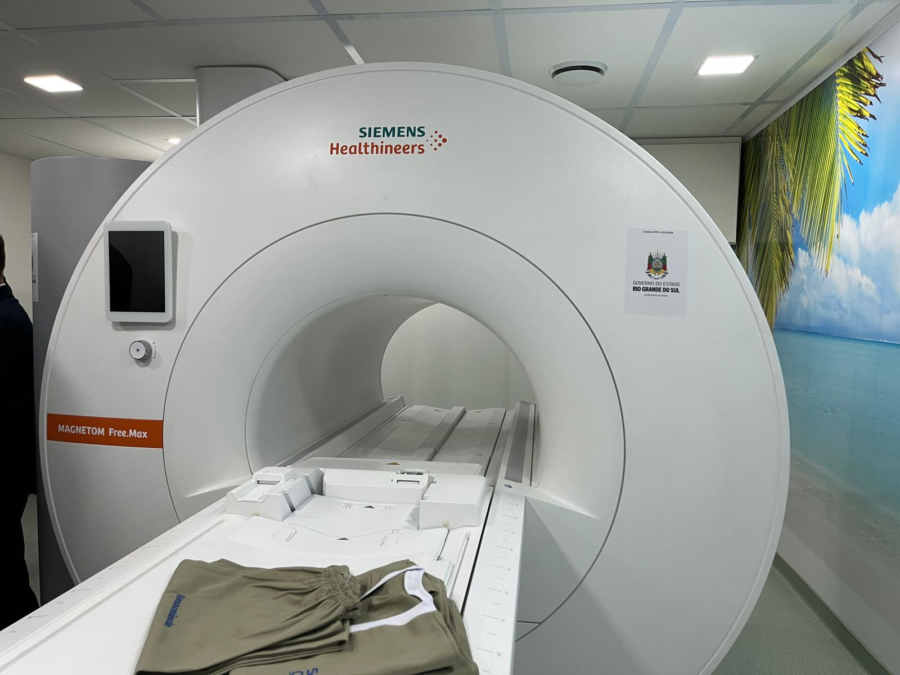

Explore as diferentes formas de ondas e descubra seus usos!
Ondas ionizantes
Ondas ionizantes: São ondas com muita energia, capazes de "arrancar" elétrons dos átomos. Isso pode danificar células e até o DNA. Exemplos: raios-X e raios gama.
Ondas não ionizantes: São ondas com menos energia, que não conseguem "arrancar" elétrons. Elas não causam tanto dano ao corpo. Exemplos: luz visível, micro-ondas e ondas de rádio.
Basicamente, as ondas ionizantes são mais perigosas, enquanto as não ionizantes são mais comuns e geralmente mais seguras.
Rádio
Comprimento de Onda: Longo, variando de metros a quilômetros.
Frequência: Baixa, de kilohertz (kHz) até gigahertz (GHz).
Exemplo: Utilizadas em transmissões de rádio, televisão e comunicações sem fio (como Wi-Fi).
Aplicação: Comunicações de rádio AM e FM, Bluetooth, e telecomunicações.
Classificação: Não Ionizante
Micro-ondas
Comprimento de Onda: Um pouco mais curtas que as ondas de rádio, variando de milímetros a centímetros.
Frequência: Maior que as ondas de rádio, geralmente na faixa de gigahertz.
Exemplo: Utilizadas em fornos de micro-ondas para aquecer alimentos e também em radares.
Aplicação: Redes de comunicação sem fio (Wi-Fi), transmissão de dados via satélites, radares meteorológicos.
Classificação: Não Ionizante
Infravermelho
Comprimento de Onda: Menor que as micro-ondas, variando de 700 nanômetros (nm) a 1 milímetro.
Frequência: Entre o infravermelho próximo (mais próximo da luz visível) e o infravermelho distante.
Exemplo: Usado em controles remotos e câmeras de visão noturna.
Aplicação: Termografia (detecção de calor), sensores de movimento, comunicação por fibra óptica.
Classificação: Não Ionizante
Luz Visível
Comprimento de Onda: Entre 400 e 700 nanômetros (nm).
Frequência: Faixa perceptível ao olho humano, representada pelas cores do arco-íris.
Exemplo: Luz que vemos diariamente, usada em lâmpadas e telas de dispositivos.
Aplicação: Iluminação, câmeras, lentes, todos os dispositivos que produzem ou captam luz.
Classificação: Não Ionizante
Ultravioleta
Comprimento de Onda: Menor que a luz visível, entre 10 nm e 400 nm.
Frequência: Alta, com energias suficientes para causar danos a tecidos biológicos.
Exemplo: Radiação emitida pelo Sol que provoca bronzeamento e, em altas doses, queimaduras solares.
Aplicação: Esterilização de equipamentos médicos, detecção de substâncias fluorescentes, bronzeamento artificial.
Classificação: Parte Ionizante (UV-C) e Parte Não Ionizante (UV-A e UV-B)
Raios X
Comprimento de Onda: Muito curto, entre 0,01 a 10 nanômetros.
Frequência: Extremamente alta, com energia capaz de penetrar muitos materiais sólidos.
Exemplo: Usado em imagens de raios-X para ver estruturas internas do corpo humano.
Aplicação: Diagnóstico médico (radiografias), inspeção de bagagens em aeroportos, análise de materiais densos.
Classificação: Ionizante
Raios Gama
Comprimento de Onda: Os menores no espectro eletromagnético, com comprimentos menores que 0,01 nanômetros.
Frequência: Altíssima, com energias que podem causar alterações atômicas.
Exemplo: Emissões radioativas de materiais como o cobalto-60 usadas no tratamento de câncer.
Aplicação: Radioterapia para tratamento de câncer, estudo de materiais radioativos, detecção astronômica de fenômenos no espaço.
Classificação: Ionizante
Ressonância Magnética

A ressonância magnética usa campos magnéticos e ondas de rádio para produzir imagens detalhadas
de órgãos e tecidos no corpo. É especialmente útil para analisar tecidos moles, como o cérebro e articulações.
Tomografia Computadorizada
A tomografia computadorizada (TC) usa raios X para criar imagens detalhadas em cortes transversais
do corpo. Ela é amplamente utilizada para diagnosticar problemas ósseos, lesões internas e detectar tumores.